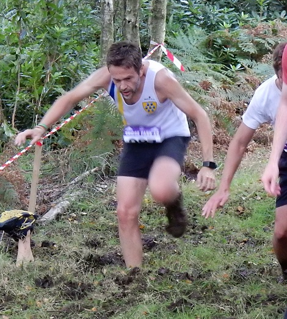

Dan Witt writes:

"This year's Eridge 10 mile x-country on Sunday race saw the welcome return to racing of Allan Lee.
"We had good conditions underfoot apart from the numerous bogs and water features dotted around the seriously hilly course.
"The beer and cakes were a welcome sight at the end as you'd imagine!
"Alan managed 5th place and 2nd M40 in impressive time of 1:07:21 considering how long he's been absent from racing. I just about managed to improve on my time from last year by almost two minutes and came in 21st place at 1:19:12."
Completing the quartet of Sevenoaks AC runners, Clair Thornton was 185th in 1:47:34, with Mike Allen 186th in the same time.
The results are here.
And James Graham was 11th overall and 1st M60 at the Thanet Coastal Marathon on the same day with 3:16:18, our only representative at that race or the accompanying half. The Marathon results are here.